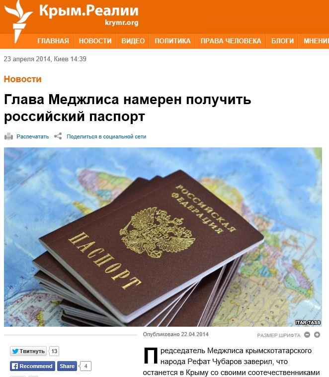
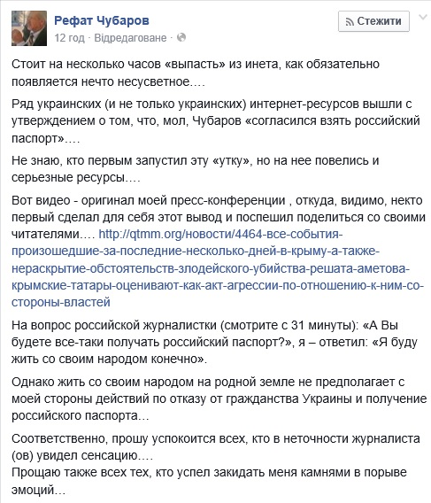

Рефат Чубаров не заявлял о намерении получить российский паспорт
Несколько украинских СМИ со ссылкой на корреспондента «Крым.Реалии» сообщили о том, что председатель Меджлиса крымскотатарского народа Рефат Чубаров якобы заверил, что получит паспорт гражданина Российской Федерации.
Об этом было заявлено со ссылкой на пресс-конференцию в Симферополе.Отвечая на вопрос журналиста, будет ли Чубаров получать российский паспорт, глава Меджлиса сказал: «Я буду жить вместе со своим народом.Конечно».
Однако сам Рефат Чубаров опроверг информацию о намерении получить российский паспорт на своей странице в Фейсбук.
«На вопрос российской журналистки (смотрите с 31 минуты): «А Вы будете все-таки получать российский паспорт?», я – ответил: «Я буду жить со своим народом конечно».Однако жить со своим народом на родной земле не предполагает с моей стороны действий по отказу от гражданства Украины и получение российского паспорта… Соответственно, прошу успокоится всех, кто в неточности журналиста (ов) увидел сенсацию», — написал Рефат Чубаров.
Видео пресс-конференции находится в свободном доступе в Youtube.


Следует сказать, что большинство СМИ после этого опровержения исправили свою ошибку.
Posted On: 2014-04-22T21:00:00
Content Date: 2014-04-22
Download Date: 2021-07-16
Document ID: L0C04FB12